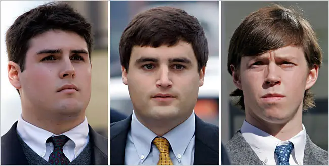

By William D Cohan
March 24, 2014
Then 19 years old, Ryan McFadyen, a six-foot-five defenseman on the Duke lacrosse team, remembers that March 13, 2006, was one of those gorgeous, sunny North Carolina spring days.
At lacrosse practice that morning, Coach Mike Pressler had a pile of cash to hand out to the players for “meal money”—$30 a meal, per player for the eight days of spring break. “Coach Pressler said, ‘Yeah, here’s 500 bucks. Here’s 500 bucks. Here’s 500 bucks,’” McFadyen recalls.
Afterward, McFadyen got a voicemail from David Evans, one of the team’s four co-captains, who lived off Duke’s East Campus at 610 North Buchanan Boulevard, in Durham. “I remember the message he left,” McFadyen says. “‘Hey, we’re having a barbeque over at 610. Get yourself and the sophomore guys over here. I need a six-foot-five hunk of meat in my backyard right now.’
With cash in their pockets, the idea was just to have some fun at the house, while the rest of the Duke students were away on spring break.
McFadyen got to the party at around two in the afternoon. “Guys were drinking,” he says. “We were hanging out. I don’t think I had any beers yet, because I know I went back to eat and went to the gym and worked out again.” Then he got a ride back to the party. “We were there all day, grilling, having beers, playing washers, beer pong, just having a good time, playing some music . . . Everyone was drinking and someone said, ‘Oh, let’s go to the strip club.’
Then someone’s idea was, ‘Let’s just have dancers come to the house, as opposed to risking people going out and getting in trouble. We’ll just order dancers to come here—a very common occurrence on campus.”
After finding the phone number of the Allure Escort Services, Dan Flannery, another co-captain who shared the house with Evans, called and discussed the hourly rate for each stripper ($400), whether they could choose the girls on the basis of traits they preferred, and if there was a maximum partier-to-stripper ratio.
He gave the woman a fake name—Daniel Flanigan—but his real cell-phone number. “She called me back 20 to 25 minutes later, telling me that she had two girls,” Flannery recalled in a subsequent written statement.
When McFadyen returned to the party, “People were collecting money, like, ‘Hey, we’ve got dancers coming. Instead of going to Teasers, they’re coming here.’”
As McFadyen remembers it, when the dancers arrived, Flannery announced, “‘Hey, both girls are here, and they’re chocolate.’” “‘Hell yeah, bring them in,’” replied Devon Sherwood, the team’s only black player. (Sherwood says he made no such comment.)
Around midnight, McFadyen and some of his younger teammates went back to their dorm rooms at Edens, on Duke’s West Campus. “Hung out for a bit. I wrote my e-mail. I go to sleep, ” McFadyen remembers.
The e-mail he is referring to, he says, was a riff on the Bret Easton Ellis novel *American Psycho,*which was required reading in some Duke literature courses.
The book and the 2000 movie based on it were favorites of McFadyen’s. “To whom it may concern,” his e-mail began, “tomorrow night, after tonights show, ive decided to have some strippers over to edens 2c. all are welcome.. however there will be no nudity. I plan on killing the bitches as soon as the[y] walk in and proceding to cut their skin off while cumming in my duke issue spandex . . all in besides arch and tack [two of his teammates] please respond”
Then he went to bed.
The entire Duke-lacrosse criminal case, from the night in question to the dismissal of the criminal charges against three players—Collin Finnerty, Reade Seligmann, and David Evans—took 13 months.
In that time, lacrosse coach Mike Pressler was forced to resign; the remainder of the team’s promising 2006 season, for which Duke returned six All Americans, was canceled; and nearly the entire nation, including many of the players’ own professors, presumed their guilt. Pressler would eventually settle with the university for an unknown amount, and Finnerty, Seligmann, and Evans are thought to have received as much as $20 million each in a confidential settlement with Duke.
If that is correct, then between legal fees, settlements, and other public-relations fees, the party on the night of March 13, 2006 may have cost Duke $100 million.
For what was subsequently adjudged to be his many shortcomings in the handling of the Duke lacrosse case, Durham County District Attorney Mike Nifong was fired from office, was disbarred and was sentenced to one day in jail—the only person who spent any time in jail in connection with the case. Faced with the prospect of $180 million worth of lawsuits filed against him by the Duke players, he also filed for personal bankruptcy.
For Ryan McFadyen, however, there was no multi-million-dollar settlement and no public apology. (A lawsuit he filed, along with two of his teammates, against Duke and others is still pending.)
For him what has lasted is that e-mail—sent on a whim, at two in the morning—which encouraged much of the country to believe that the narrative put forth by Crystal Mangum, the “victim/accuser,” as she became known, might actually be true.
It is a cautionary tale about one of the still-evolving dangers of our new, all-encompassing digital era: how the dispatching of a single, flippant e-mail to a select group of friends after a night of partying can change your life forever.
Initially, the only reaction to the e-mail McFadyen received came from his teammate Erik Henkelman at practice the next morning. “I distinctly remember Erik Henkelman getting my joke,”
McFadyen recalls. “I walked in, and he was like, ‘Dude, that e-mail was so funny.’” Afterward, “We’re walking towards East Campus, and there’s a cop car parked in front of 610,” McFadyen says, and the police were talking to some of his teammates.
“Apparently, that stripper [Mangum] called the cops or something.” It would be another day or two before Coach Pressler told players that Mangum was claiming she had been raped.
At first, according to McFadyen, the players did not think it was a big deal to give DNA samples to the Durham police.
“We were so convinced that nothing happened,” he recalls. “The cops were like, ‘You give it and nothing matches, it’ll be over.’ O.K., well, nothing is going to match. Take our DNA. Just take what you need.”
He said the police took a mouth swab, some of his hair and fingernails.
Since Mangum had told investigators that she had viciously scratched her attacker, the police were also looking for evidence of scratches on the players’ bodies.
At the Durham police station, the 46 white lacrosse players on the Duke team stripped down to their boxers.
“We all got basically naked and they took pictures of our bodies,” McFadyen says. “I mean, we’re lacrosse players. We’re young, 20-year-old guys. We’re covered in bruises. We’re scratched up. I remember Reade [Seligmann, a sophomore midfielder] had a—because we beat the shit out of him in practice—had a bruise down his arm. ‘Oh my god,’ they said, ‘take a picture of this,’ and they’re documenting his arm.”
On March 27—two weeks after the party—Durham police officers Mark Gottlieb and Benjamin Himan were in a training class when Police Corporal David Addison summoned Gottlieb to step outside to see a “disturbing message”: Ryan McFadyen’s e-mail.
The officers agreed it “was written in a manner that indicated the possibility of two or more people may have conspired to kill someone,” according to Gottlieb, the lead police investigator on the lacrosse case.
The e-mail—which found its way to investigators through CrimeStoppers, a community-oriented program coordinated by Addison—had been sent by one Ryan McFadyen, just before two A.M. in the early morning hours of March 14, some 90 minutes after the party at 610 North Buchanan had ended.
After the officers reviewed the e-mail, they went to see Nifong, the Durham County D.A., at the Durham courthouse. Nifong authorized Gottlieb and Himan to pursue a warrant to search McFadyen’s dorm room, even though Mangum had previously ruled out McFadyen as one of her attackers.
To the original five crimes—first-degree rape, first-degree kidnapping, first-degree sexual offense, common-law robbery, and “felonious strangulation”—that the officers believed were committed in the house on the night of March 13, they now added a sixth: conspiracy to commit murder.
Durham Superior Court Judge Ronald Stephens granted Nifong and the officers the search warrant they were seeking, but he ordered it sealed indefinitely, meaning that it could not be made public until the court chose to do so.
Six police officers, accompanied by a member of the Duke University police force, began the search of McFadyen’s dorm room at 6:01 P.M.
Gottlieb and Himan led the team. After knocking on the door to McFadyen’s room and announcing he was a police officer, Himan served the warrant on Brad Ross, a sophomore midfielder and McFadyen’s roommate.
While in their reports Gottlieb and Himan described a calm scene, there was at least one other perspective.
According to a court document filed by Robert Ekstrand, a Durham attorney and Duke graduate who represented many of the lacrosse players in the months to follow, “Gottlieb, in particular, was in a rage. The officers destroyed furniture, and needlessly threw clothes, papers, cords, and books everywhere.” Gottlieb left before the search concluded. But before he did, Gottlieb noted that “inside the room were a number of hand drawn penises on the wall with team member’s nicknames, jersey numbers, and questionable racial/ethnic things written on same.”
At 7:15, McFadyen returned to his room to find the search still underway.
In many ways, McFadyen was a typical Duke student-athlete: tall, strapping, handsome—an unmistakable presence when he entered a room.
Bright but not bookish or intellectual, he grew up in Mendham, New Jersey, and attended the Delbarton School, a Catholic all-boys school, where he had played lacrosse.
He was good but not a standout, making the second all-county team. His father was a homebuilder, and as a teenager McFadyen had worked for him during summers.
“My dad is blue-collar, old school,” McFadyen says. “I think he has said, ‘I love you,’ to me four or five time. . . . He shows his affection in other ways, and I know that.”
McFadyen has three younger sisters and a very strong-willed mother. “You know: ‘No means no’ and ‘Respect women,’” he explains. “I always told my dad if I had a brother I’d probably be in the N.F.L., but I had three sisters, which has also been a good thing because I understand women and I’m in touch with my emotions more than the average guy.”
McFadyen was, indeed, emotional when he arrived back at his dorm room from the Duke library.
He walked upstairs and saw four police officers in the hallway outside his room and another three in his room. “They’re just tearing through everything. Tearing it apart,” he says. “They don’t have a copy of the search warrant for me. I’m like, ‘What? Are you kidding me?’”
An officer eventually produced one. “Flipping through pages, I see my name: ‘What the fuck is this? Are you kidding me?’ Then I see the charge: conspiracy to commit murder. My fucking heart drops.”
McFadyen recalls the ensuing conversation as follows:
“‘Are you fucking kidding me? You really think—?’
‘Sir, we have to take every threat as credible. We have to take it seriously.’
‘This is a fucking joke. It’s a reference to a fucking movie.’”
It’s just my single e-mail, singled out, nothing following it, nothing preceding it, and that’s it.” Ekstrand’s paralegal Stefanie Sparks, a former lacrosse player at Duke, had arrived by this time. She advised McFadyen to cooperate.
Between his dorm and his car, officers found and confiscated: three $20 bills, two laptops, an external hard drive, a “memory card” and two DVDs, a disposable camera, a piece of paper with “suckie, suckie $5” written on it, some penis drawings, and a Duke backpack with McFadyen’s [jersey] number, “41,” on it.
Later that night, having calmed down a bit, McFadyen called his parents. “I think it was the first time I even brought up that there was an investigation, that we’d given DNA, or anything like that,” he says.
“‘I’m being investigated for conspiracy to commit murder,’” he said to them. “I remember just saying that, like, Holy shit. How do you tell your parents that?”
He told them about the e-mail. “They said, ‘In hindsight, maybe you shouldn’t have sent it.’”
Within weeks of the party, McFadyen was in his history-of-labor-relations class.
At the start of the class, the professor and McFadyen’s advisor, Reeve Huston, addressed the allegations.
According to McFadyen, “He got up and said, ‘I just want to take the first couple minutes of class to discuss a few items that are hot in the news. I want to talk about the alleged Duke rape case.’”
In the class of about 15, eight students were on the lacrosse team. “‘Three things are identified to be fact,” the professor continued, according to McFadyen. “‘One: there was definitely intercourse that night. Two: a condom was most likely used, as cited by . . . ’”
Casey Carroll, a junior defenseman who had not been at the party, decided he had heard enough. “I remember Casey just getting up in the middle of class and just walking out,”
McFadyen says. “He said, ‘I’m not going to sit here and have you berate me with what you’ve established to be facts.’” McFadyen and the other players followed him.
On March 29, more than 500 students, faculty members, administrators, and Durham residents marched across Duke—starting at the Marketplace on East Campus and ending more than a mile later at the Duke Chapel on West Campus—a “Take Back the Night” protest that was coincidentally part of a long-planned Sexual Assault Prevention Week on campus.
The protesters distributed printed chants and the names and pictures of the lacrosse players, as well as the phone numbers for police officers to be contacted. During speeches and the reading of poetry, some people defaced the players’ photos.
In the crowd, a reporter from The Chronicle, the school’s daily newspaper, found McFadyen. “I completely support this event and this entire week,” McFadyen told her. “It’s just sad that the allegations we are accused of happened to fall when they did.”
McFadyen, along with teammates Collin Finnerty, a sophomore attack, Kevin Mayer, a sophomore defenseman, and a couple of others, met up at the dorm and turned on the television to watch ESPN.
The media coverage of the alleged rape had exploded. “All of a sudden, I’m quoted on ESPN,”
McFadyen recalls. “‘Sophomore Ryan McFadyen said it’s unfortunate these incidents occurred, while attending Take Back the Night.’
And I was like, ‘Are you kidding me?’ The kid who I casually knew from a class . . . had taken a quote that was innocent [out of context].” (The student reporter maintains that she did identify herself as a reporter, but concedes that her approach “may have caught Ryan off guard.”)
He and his teammates stared at each other in disbelief. “We’re kind of looking at each other, like, ‘Holy fuck.’”
On April 5, Durham court officials unsealed the warrant that had authorized the search of McFadyen’s dorm room nine days earlier.
Not only was the fact that police had searched McFadyen’s room now public but so was McFadyen’s e-mail. Why Judge Stephens chose this moment to unseal the warrant, and at whose request, is not known for certain. (The Durham Herald-Sun claimed credit in an article the next day; Judge Stephens, now retired, did not return a phone call seeking clarification.)
In short order, all hell broke loose. Almost immediately, John Burness, Duke’s director of communications, found McFadyen’s e-mail on the Web site of The News & Observer, the Raleigh newspaper, and took it directly to the university’s president, Richard Brodhead.
“That’s where I first read this e-mail, and I have to say, when I read it, I was sickened,” explained Brodhead. “I found it repulsive.”
That morning, McFadyen went to Spanish class and then headed to the library to write a five-page history paper due later that day. By then, word was out. Ekstrand called McFadyen to tell him his e-mail had gone viral.
“We need to prepare a statement,” Ekstrand told him. McFadyen then went to the library and drafted a passionate defense of his actions.
At noon, standing in front of the Duke Chapel, a local television reporter read from the unsealed warrant and the e-mail, without mentioning—or likely knowing about—its reference to American Psycho.
After watching the broadcast, Coach Pressler’s first instinct was to find McFadyen. “I was worried that they had shown his picture and in the craziness that something could happen to him,” he recounted in the book he later co-authored about the case.
When Pressler met McFadyen at Ekstrand’s office, he recalls that McFadyen was scared. “He started to explain the e-mail,” Pressler said, “but I let him know that wasn’t important. His well-being was the priority.”
Ekstrand turned on the TV and pulled up the stories about McFadyen online. “Things have gotten real serious,” Ekstrand told him. “It’s probably not safe for you to go back to your dorm, so we’re going to keep you at [Stefanie Sparks’s] apartment for this afternoon. We’ll get you some food. Just hang out there until we figure out what’s going on.”
Ekstrand asked to hear McFadyen’s statement about the e-mail. He read it aloud—it was an angry rejoinder—and Ekstrand said, “‘No, we’re not reading that,’” recalls McFadyen.
McFadyen’s hours at Sparks’s apartment in Durham were wrenching and chaotic.
He spoke with his parents again. “I’m coming down to get you,” his father told him, before he flew down to Raleigh.
That same day, the dean of students, Sue Wasiolek, informed McFadyen he was being put on interim suspension. “‘You didn’t do anything wrong,’” McFadyen says she told him. “‘It’s only temporary.’”
At 4:30 P.M. President Brodhead held a press conference to announce the forced resignation of Coach Pressler and the end of the lacrosse season for the Duke team. He also announced McFadyen’s suspension.
"April 5, 2006,” McFadyen says solemnly. “I wanted to get that tattooed on my body, because that moment has changed my life forever. I think about it every day. I got Coach Pressler fired. I’m responsible for my teammates having the season canceled. I take responsibility. Over a year, over two years, I’ve told Coach Pressler. He said, ‘It’s not your fault.’ I still get teary thinking about it right now.”
Before the day was out, McFadyen had packed up his things and left Duke.
In the car, he sat silently while his father considered their options.
“Let’s get on the horn,” John McFadyen told his son. “Let’s start getting in touch with other college coaches. Obviously, you’re not going to graduate from Duke.”
Ryan wondered if he could ever go back to Duke and, if he did, what his friends and classmates would think of him.
Would he always be “the kid who wrote this completely repulsive e-mail,” who “must be a sociopath” and “unstable?” But he was also frustrated. “Nobody ever gave me any opportunity to explain myself,” he says. He spent the car ride back home thinking about his father’s advice. “We drive through the night. We get home, like, six A.M. the next day.”
By the time they arrived back in New Jersey, a horde of television trucks and newspaper photographers were lined up in front of their house.
“We pull into the house, walk up, and my three sisters and my mom are all pretty teary-eyed watching the news,” McFadyen recalls. “The news anchor was just like, ‘What a sick, twisted kid. This kid’s parents must really be ashamed,’ or something like that. And I’m with my parents, and all my little sisters are there. I just remember it being, like, the heaviest moment of the whole, entire experience. . . . I remember really feeling like I let my parents down and, more importantly, like I somehow affected my sisters.”
It would take two months for Duke to sort out what McFadyen had been thinking when he wrote the e-mail and to reinstate McFadyen at the university.
He graduated from Duke in 2008 and earned a master’s degree in liberal studies from the university in 2010. (His thesis was on Russia’s economic system.)
But through it all, his e-mail continued to haunt him. He had a difficult time landing a job because a Google search of his name would immediately reveal it.
Like many of his teammates, he had hoped to get a job on Wall Street.
He got far down the road with a San Francisco–based venture-capital firm, but then his e-mail popped up and that was that.
He eventually worked as a junior analyst at W. R. Huff Asset Management, in Morristown, New Jersey, and as an intern at Guerrilla Fitness CrossFit, also in Morristown.
Recently, he changed his name to John, like his father’s. “I figured, if I could get in front of people—they would look at a résumé and say, ‘He’s good enough; bring him in’—I can speak to them and they’ll see that I’m not what the Internet makes me out to be,” he says. “I’m not the kind of monster that a lot of people preconceive me to be.”
Since April 2012 he has been an associate at Post Road Residential, in Fairfield, Connecticut, a developer of multi-family residential homes started by the father of one of his teammates.
McFadyen explains the context of the notorious e-mail: “It was locker-room talk. It was digital locker-room talk, you know? That e-mail was just one of a lot I had sent that year. I thought of myself as a funnier kid on the team. I made a lot of jokes, and definitely I still do that with some e-mail chains. Obviously now I second-guess everything. . . . I was making a joke, and I happened to make a dark joke referencing a movie about a serial killer who kills strippers and homeless people and prostitutes, and that tied in perfectly to the storyline of the mostly-white team raping a poor black girl from Durham.”
He continues: “I’ve been through a lot. I put most of it behind me, but I don’t think anybody can really comprehend, because to really understand what happened to me, how it affected me—I’m still not fully realizing what I’ve been through six years down the road. There’s still things that are coming out that I’m realizing, ‘Wow, this is how I live my life now because of what happened in 2006 and the two or three years after that.’ . . . I look at things a lot differently than a lot of other people and go about life in similar circumstance, whether it’s just personal relationships, professionally, the way I behave in an office, or meeting other people. It’s different.”
Copyright © 2022 by Dillon Frank